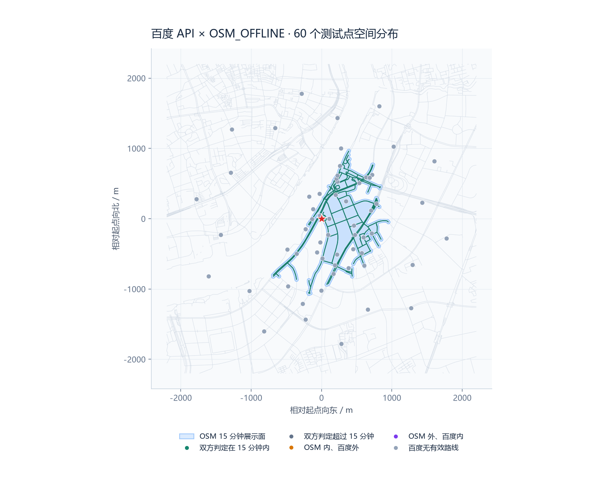
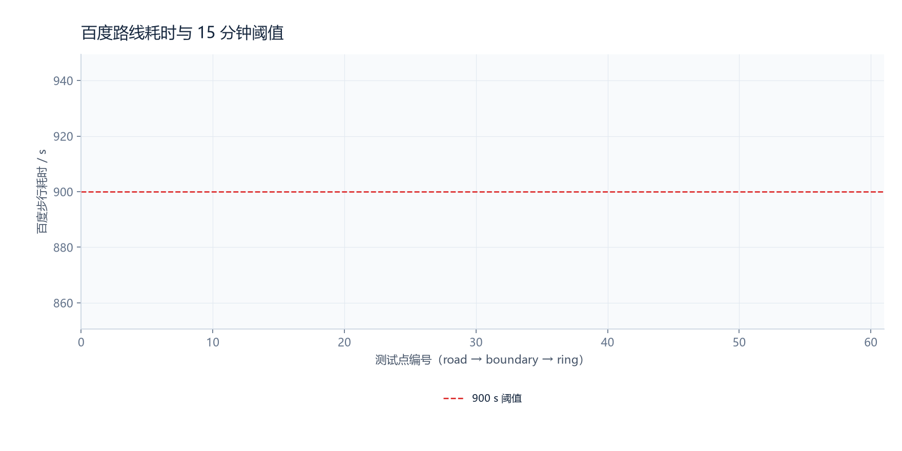
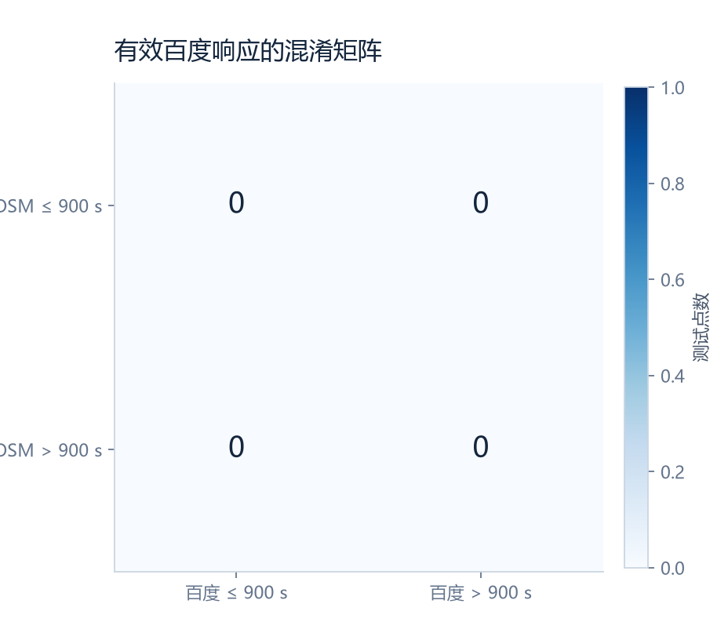

样例 A · 起点 BD09LL 121.511080, 31.204150 · 生成 60 个点 · 2026-09-14T01:46:52.579163+00:00
比较定义：OSM 使用离线 15 分钟展示面是否覆盖测试点；百度使用步行路线耗时是否 ≤ 900 秒。每个点只发起一次请求，未知响应不计入混淆矩阵。
环境诊断：60 次请求均在 HTTP 响应前出现 ConnectError，HTTP 状态和百度状态均不可用；本次运行不能计算百度对照指标。



| 指标 | 数值 |
|---|---|
| TP / TN / FP / FN | 0 / 0 / 0 / 0 |
| 准确率 | — |
| 精确率 | — |
| 召回率 | — |
| 特异度 | — |
| 平衡准确率 | — |
| 不一致点 | 0（—） |
| 不一致点距 900 秒的中位绝对差 | — s |
| 分组 | 总数 | 有效 | TP | TN | FP | FN | 准确率 | F1 |
|---|---|---|---|---|---|---|---|---|
| road | 20 | 0 | 0 | 0 | 0 | 0 | — | — |
| boundary | 20 | 0 | 0 | 0 | 0 | 0 | — | — |
| ring | 20 | 0 | 0 | 0 | 0 | 0 | — | — |
原因计数：{"temporary": 60}；HTTP 状态：{"none": 60}；百度状态：{"none": 60}；传输错误：{"ConnectError": 60}。端点校验通过 0/60。
| 编号 | 分组 | BD09LL | OSM | 百度 | 耗时 / s | 分类 | 原因 |
|---|---|---|---|---|---|---|---|
| road-01 | road | 121.510838, 31.204549 | 内 | 无效 | — | unknown | temporary |
| road-02 | road | 121.512103, 31.202109 | 内 | 无效 | — | unknown | temporary |
| road-03 | road | 121.511276, 31.199053 | 内 | 无效 | — | unknown | temporary |
| road-04 | road | 121.507423, 31.199603 | 内 | 无效 | — | unknown | temporary |
| road-05 | road | 121.513104, 31.207251 | 内 | 无效 | — | unknown | temporary |
| road-06 | road | 121.515882, 31.203372 | 内 | 无效 | — | unknown | temporary |
| road-07 | road | 121.513344, 31.208960 | 内 | 无效 | — | unknown | temporary |
| road-08 | road | 121.513174, 31.209300 | 内 | 无效 | — | unknown | temporary |
| road-09 | road | 121.513345, 31.209728 | 内 | 无效 | — | unknown | temporary |
| road-10 | road | 121.516071, 31.202166 | 内 | 无效 | — | unknown | temporary |
| road-11 | road | 121.516596, 31.208845 | 内 | 无效 | — | unknown | temporary |
| road-12 | road | 121.513142, 31.198217 | 内 | 无效 | — | unknown | temporary |
| road-13 | road | 121.518569, 31.202373 | 内 | 无效 | — | unknown | temporary |
| road-14 | road | 121.512923, 31.197087 | 内 | 无效 | — | unknown | temporary |
| road-15 | road | 121.517615, 31.209599 | 内 | 无效 | — | unknown | temporary |
| road-16 | road | 121.518400, 31.205306 | 内 | 无效 | — | unknown | temporary |
| road-17 | road | 121.517344, 31.201884 | 内 | 无效 | — | unknown | temporary |
| road-18 | road | 121.517475, 31.198261 | 内 | 无效 | — | unknown | temporary |
| road-19 | road | 121.509681, 31.204089 | 内 | 无效 | — | unknown | temporary |
| road-20 | road | 121.519201, 31.206221 | 内 | 无效 | — | unknown | temporary |
| boundary-01 | boundary | 121.506042, 31.200169 | 外 | 无效 | — | unknown | temporary |
| boundary-02 | boundary | 121.509199, 31.206970 | 外 | 无效 | — | unknown | temporary |
| boundary-03 | boundary | 121.513836, 31.213213 | 外 | 无效 | — | unknown | temporary |
| boundary-04 | boundary | 121.518499, 31.209903 | 外 | 无效 | — | unknown | temporary |
| boundary-05 | boundary | 121.518132, 31.209545 | 外 | 无效 | — | unknown | temporary |
| boundary-06 | boundary | 121.515166, 31.197883 | 外 | 无效 | — | unknown | temporary |
| boundary-07 | boundary | 121.517086, 31.199819 | 外 | 无效 | — | unknown | temporary |
| boundary-08 | boundary | 121.513442, 31.199610 | 外 | 无效 | — | unknown | temporary |
| boundary-09 | boundary | 121.511148, 31.194936 | 外 | 无效 | — | unknown | temporary |
| boundary-10 | boundary | 121.508442, 31.193192 | 外 | 无效 | — | unknown | temporary |
| boundary-11 | boundary | 121.508705, 31.202806 | 外 | 无效 | — | unknown | temporary |
| boundary-12 | boundary | 121.506198, 31.195411 | 外 | 无效 | — | unknown | temporary |
| boundary-13 | boundary | 121.509816, 31.205356 | 外 | 无效 | — | unknown | temporary |
| boundary-14 | boundary | 121.510484, 31.199809 | 外 | 无效 | — | unknown | temporary |
| boundary-15 | boundary | 121.510947, 31.201141 | 外 | 无效 | — | unknown | temporary |
| boundary-16 | boundary | 121.515832, 31.200338 | 外 | 无效 | — | unknown | temporary |
| boundary-17 | boundary | 121.512229, 31.204175 | 外 | 无效 | — | unknown | temporary |
| boundary-18 | boundary | 121.514662, 31.206447 | 外 | 无效 | — | unknown | temporary |
| boundary-19 | boundary | 121.510752, 31.207344 | 外 | 无效 | — | unknown | temporary |
| boundary-20 | boundary | 121.513725, 31.210989 | 外 | 无效 | — | unknown | temporary |
| ring-01 | ring | 121.525983, 31.206490 | 外 | 无效 | — | unknown | temporary |
| ring-02 | ring | 121.527694, 31.211863 | 外 | 无效 | — | unknown | temporary |
| ring-03 | ring | 121.521641, 31.213596 | 外 | 无效 | — | unknown | temporary |
| ring-04 | ring | 121.519396, 31.218770 | 外 | 无效 | — | unknown | temporary |
| ring-05 | ring | 121.513260, 31.217110 | 外 | 无效 | — | unknown | temporary |
| ring-06 | ring | 121.507902, 31.220163 | 外 | 无效 | — | unknown | temporary |
| ring-07 | ring | 121.504028, 31.215745 | 外 | 无效 | — | unknown | temporary |
| ring-08 | ring | 121.497595, 31.215552 | 外 | 无效 | — | unknown | temporary |
| ring-09 | ring | 121.497476, 31.210004 | 外 | 无效 | — | unknown | temporary |
| ring-10 | ring | 121.492432, 31.206613 | 外 | 无效 | — | unknown | temporary |
| ring-11 | ring | 121.496125, 31.202014 | 外 | 无效 | — | unknown | temporary |
| ring-12 | ring | 121.494405, 31.196687 | 外 | 无效 | — | unknown | temporary |
| ring-13 | ring | 121.500495, 31.194809 | 外 | 无效 | — | unknown | temporary |
| ring-14 | ring | 121.502752, 31.189595 | 外 | 无效 | — | unknown | temporary |
| ring-15 | ring | 121.508901, 31.191194 | 外 | 无效 | — | unknown | temporary |
| ring-16 | ring | 121.514256, 31.188146 | 外 | 无效 | — | unknown | temporary |
| ring-17 | ring | 121.518120, 31.192602 | 外 | 无效 | — | unknown | temporary |
| ring-18 | ring | 121.524520, 31.192915 | 外 | 无效 | — | unknown | temporary |
| ring-19 | ring | 121.524639, 31.198466 | 外 | 无效 | — | unknown | temporary |
| ring-20 | ring | 121.529648, 31.201995 | 外 | 无效 | — | unknown | temporary |
OSM 数据版本 geofabrik-shanghai-20260912 · CRS EPSG:32651 · 百度接口 /directionlite/v1/walking · Git fbb00bad2363 · 原始安全证据见 evidence.json。